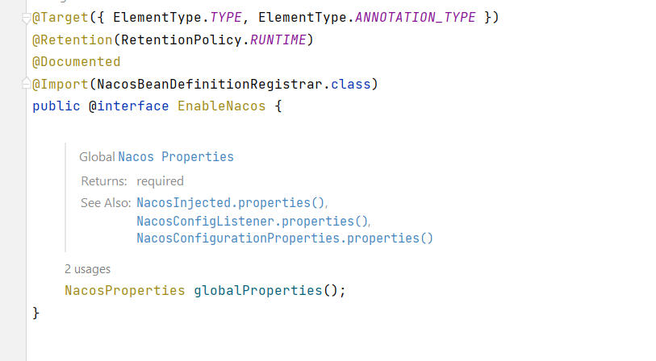
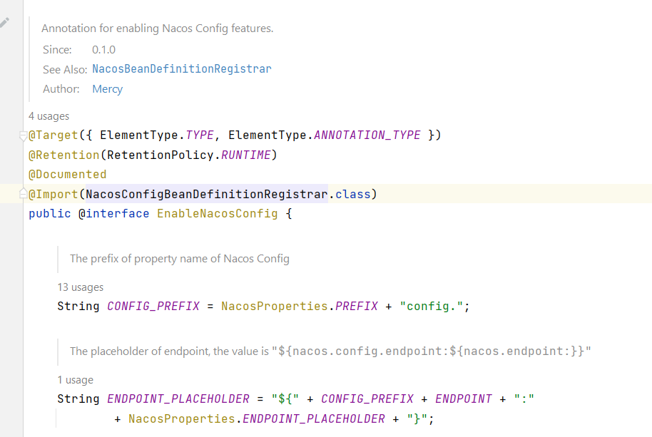

NacosSpringProject配置管理源码分析(一)
本文最后更新于：2022年9月22日 下午
Nacos spring project主要是面向仅使用spring框架的项目，主要提供了Nacos-client中的配置管理模块与服务发现模块在spring框架中集成的相关功能。
从整个项目上面来看，可以大致的分为以下两个部分，Nacos相关配置Bean的解析与注入以及Nacos相关功能注解的解析与处理。
其中配置Bean的解析注入分为XML配置与注解配置两个部分。
而Nacos相关功能注解主要包含了@NacosValue、@NacosConfigListener、@NacosInjected等注解的处理，主要是利用了BeanPostProceesor的特性。
接下来的两篇文章将围绕Nacos spring project中配置管理相关的功能模块进行分析，主要包含了@EnableNacos、@EnableNacosConfig、@NacosInjected、@NacosValue、@NacosPropertySource、@NacosConfigurationProperties与@NacosConfigListener注解的基本使用以及其原理。
@EnableNacos/@EnableNacosConfig
1 | |
通常在Spring项目中我们可以利用@EnableNacos的注解开启Nacos，或是利用@EnableNacosConfig注解仅开启配置管理功能，又或者可以通过XML配置的方式开启Nacos功能。注解配置或是XML配置的原理是相似的，本文将针对项目中较为常用的注解配置来进行分析。


@EnableNacos与@EnableNacosConfig实际上都是利用了@Import注解的机制，@Import的作用主要是用于导入其他配置类。
被引入的NacosBeanDefinitionRegistrar与NacosConfigBeanDefinitionRegistrar都实现了ImportBeanDefinitionRegistrar接口，在这个接口中完成Bean定义的注入。
在NacosBeanDefinitionRegistrar中，首先会注册一个PropertySourcesPlaceholderConfigurer，在前面的Spring Environment解析的文章中我们提到过这个类的功能主要是用于属性中占位符的解析随后会注册一个由Nacos全局配置属性构成Properties对象的Bean；接着会注册Nacos注解处理相关的BeanDefinition，@EnableNacosConfig注解不同的地方是只会注册配置管理相关的Bean；最后会手动的调用一次NacosPropertySourcePostProcessor的postProcessBeanFactory方法，保证@NacosPropertySource注解能够被立即处理，获取到的属性能够尽快的参与到后续Spring初始化的过程。
1 | |
我们可以注意到在这一系列的过程中，Nacos采用了两种注入方式，GloableProperties的注入是调用了NacosBeanUtils的registerSingleton方法，利用SingletonBeanRegistry直接注入Bean，而在registerNacosAnnotationBeans方法中注册的大部分都是调用了NacosBeanUtils中的registerInfrastructureBean方法利用BeanDefinitionRegistry注册了BeanDefinition，并且这些BeanDefinition的角色都被定义成了基础设施的Bean，由BeanFactory负责创建Bean。
1 | |
1 | |
接下来我们来关注一下对于配置管理而言，Nacos需要注入哪些Bean来实现Nacos client与Spring框架的结合。Bean的注册主要是来自registerNacosCommonBeans与registerNacosConfigBeans两个方法。
在registerNacosCommonBeans中注册了配置管理与服务发现的通用的功能Bean，分别是:
- 用于存放ApplicationContext的ApplicationContextHolder
- 用于处理@NacosInjected注解的AnnotationNacosInjectedBeanPostProcessor
在registerNacosConfigBeans中注册了配置管理相关功能的Bean，分别是:
- 用于处理@NacosConfigurationProperties注解的NacosConfigurationPropertiesBindingPostProcessor
- 用于处理@NacosConfigListener注解的NacosConfigListenerMethodProcessor
- 用于处理@NacosPropertySource注解的NacosPropertySourcePostProcessor
- 提供给NacosPropertySourcePostProcessor用于解析Bean并创建NacosPropertySource的AnnotationNacosPropertySourceBuilder
- 用于执行ConfigService监听器的线程池NacosConfigListenerExecutor
- 用于处理@NacosValue注解的NacosValueAnnotationBeanPostProcessor
- 用于创建ConfigService的ConfigServiceBeanBuilder
- 用于接收Nacos事件并记录的日志的LoggingNacosConfigMetadataEventListener
接下来的小节我们会逐个对这些配置Bean进行解析。
@NacosInjected
1 | |
在项目开发过程中可以使用@NacosInjected注解来注入ConfigService实例，同时还可以通过@NacosInjected中的properties来指定需要注入的配置属性项。
上一节我们提到了@NacosInjected注解主要是由AnnotationNacosInjectedBeanPostProcessor来负责处理的，AnnotationNacosInjectedBeanPostProcessor继承自AbstractAnnotationBeanPostProcessor，AbstractAnnotationBeanPostProcessor实现了Bean实例属性上自定义注解处理的基本方法，处理的思路与我们在Spring Environment解析中提到的@Value属性注入的方式类似，都是通过在MergedBeanDefinitionPostProcessor的postProcessMergedBeanDefinition方法中找到所有Bean定义中的注入点，然后利用InstantiationAwareBeanPostProcessorAdapter中postProcessPropertyValues方法处理需要被注入的属性。
本文主要关注一下AnnotationNacosInjectedBeanPostProcessor是如何完成属性注入的。
首先AnnotationNacosInjectedBeanPostProcessor在初始化过程中，会利用BeanFactory找到所有的AbstractNacosServiceBeanBuilder，并且根据AbstractNacosServiceBeanBuilder中的类型存储到nacosServiceBeanBuilderMap中。
随后AnnotationNacosInjectedBeanPostProcessor实现了doGetInjectedBean方法，这个方法会在postProcessPropertyValues回调函数中被调用，用于查找目标的Bean对象，然后由AbstractAnnotationBeanPostProcessor利用反射功能设置到属性上。
在doGetInjectedBean利用了初始化过程中收集到的AbstractNacosServiceBeanBuilder，结合@NacosInjected上的properties注解属性，创建对应的Nacos Service。
1 | |
以注入ConfigService为例，最终会找到在上一小节中注册的ConfigServiceBeanBuilder，首先会根据注解的属性解析成Properties对象，然后获取到NacosServiceFactory创建对应的ConfigService。
实际负责创建ConfigService的是CacheableEventPublishingNacosServiceFactory，在CacheableEventPublishingNacosServiceFactory中由ConfigCreateWorker负责创建，首先会根据属性从缓存中查找是否有创建过的ConfigService，如果没有会利用NacosFactory创建一个新的ConfigService，特别的是每个ConfigService被EventPublishingConfigService封装。
相对于普通的ConfigService，EventPublishingConfigService在每个ConfigService的接口上都增加了一定的事件的推送，例如在获取配置超时时会发送NacosConfigTimeoutEvent。
在EventPublishingConfigService中，推送消息所使用的ApplicationEventPublisher是DeferredApplicationEventPublisher，不同之处在于DeferredApplicationEventPublisher的消息推送当ApplicationContext处于非运行状态时，会将事件缓存在ConcurrentLinkedQueue中，当ApplicationContext发送ContextRefreshedEvent事件时再将缓存的消息进行延迟推送。
1 | |